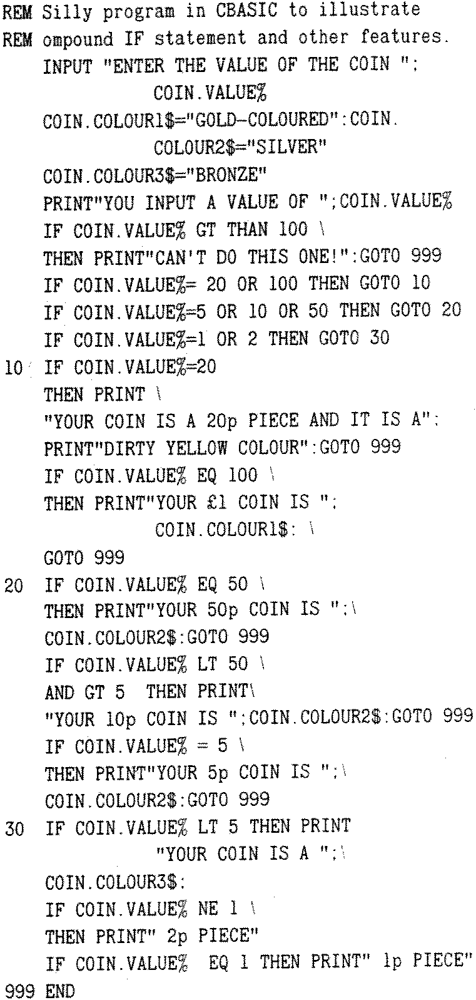

80-Bus News |
Summer 1985 · Volume 4 · Issue 2 |
| Page 14 of 31 |
|---|
| MBASIC | CBASIC |
|---|---|
| = | = or EQ |
| < | < or LT |
| <= | <= or LE |
| <> | <> or NE |
| > | > or GT |
| >= | >= or GE |
The same letters are used for relational operators in Fortran which also uses the same set of logical operators — NOT, AND, OR and XOR — as both the BASICs.
Most of the intrinsic functions in CBASIC are found in MBASIC. The exceptions are as follows:
FLOAT — converts an implicitly declared integer to its real number equivalent; if a real number is used instead, it is converted to an integer and then reconverted to its real equivalent.
INT% — this truncates a real number at the decimal point and returns an integer result. If a real number is to be converted, it is first converted to a real number before truncation. Note that this is not the same as the INT function which actually produces a real result.
This highlights the fact that unnecessary conversions and other operations will slow down a program, and to minimize this, one should make sure that any conversions are done using the right type of number.
These are almost identical in both BASICs; the only major difference is that, in addition to the letters FN, up to 29 other alphanumeric characters may be added in CBASIC.
Compared with MBASIC, CBASIC has several more string functions; the following will give some idea of the flexibility of this aspect of the dialect:
COMMAND$ — returns the CP/M command line without the name of the CP/M program being invoked. You probably won’t use this a lot.
MATCH(A$,B$,I$) — looks for string A$ starting at the I%th character in string B$. If it is present, the function returns the position in B$ of the first A$ character; if it is not present, the value 0 is returned.
SADD(A$) — returns the starting address in memory where CBASIC has stored A$.
UCASE(A$) — converts lower case letters to upper case in string A$.
in addition to the normal IF … THEN … <ELSE> statement, CBASIC has an amazing feature called the Compound IF statement where many comparisons can be made. A program which illustrates this and the use of other CBASIC features may help explain this very useful facility:
Another useful pair of statements found in both BASICs, is WHILE/WEND; they are essentially a variation of the FOR/NEXT statements and will allow statements inserted between them to be continually executed as long as the expression following WHILE is logically true. As soon as it is logically false, the sequence terminated and the next statement after WEND is executed. This is quite a nifty idea and additionally, Compound IF statements can be included between them. The following example illustrates the action of the WHILE/WEND pair:
| Page 14 of 31 |
|---|